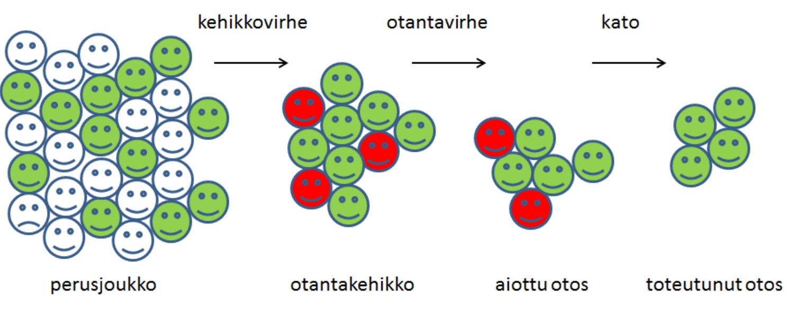
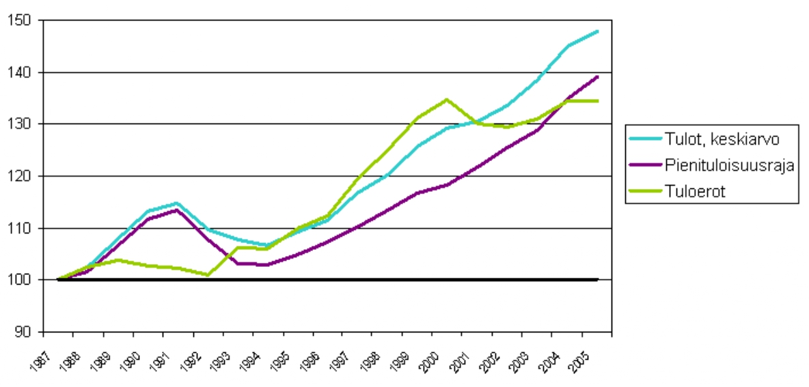

5.2 Otannan idea
- Otantatutkimuksen (karkeat) suunnittelu- ja työvaiheet ovat seuraavat:
- Tavoitteiden asettaminen
- Perusjoukon (populaation) asettaminen
- Otantakehikko
- Kerättävän informaation sisältö (mitä tietoa todella tarvitaan, mitä voidaan jättää pois, suunnitellaan kysymykset ja mahdollinen kyselylomake)
- Otoskoon määrittäminen
- Suoritetaan otoksen poiminta, tietojen keräys ja tarkastus
- Aineiston taulukointi ja analysointi
- Raportin laatiminen
- Otantatutkimuksessa ajatuksena on siis poimia edustava otos siitä populaatiosta (perusjoukosta), joka on mielenkiinnon kohteena eli jota halutaan tutkia ja josta halutaan tietoja.
- Tavoiteperusjoukko on joukko, johon otannan myötä saatavat tutkimustulokset halutaan yleistää. Toisin sanoen, se mistä haluamme tietoja määrää populaation.
- Kohdeperusjoukko on joukko, jota koskevia tietoja halutaan kerätä.
- Esimerkiksi äänestysikäiset Suomen kansalaiset.
- Usein tavoiteperusjoukko = kohdeperusjoukko.
- Tavoiteperusjoukko voi joskus olla laajempi (esim. “ihmiset” vs. “suomalaiset”).
- Tutkimuksessa (edustavaan) otokseen poimitut tilastoyksiköt, näiden tilastolliset muuttujat ja niiden arvot muodostavat otosaineiston eli siis tutkimus- tai havaintoaineiston (datan).
- Tutkimuskysymykseen vastatakseen tutkija valitsee sopivan tilastollisen mallin ja estimoi sen parametrit tähän otokseen perustuen.
- Perusoletuksena on otoksen ja valitun tilastollisten mallin pohjalta suoritettavan tilastollisen päättelyn yleistettävyys koko populaatioon.
- Otos valitaan erilaisia otantamenetelmiä hyödyntäen pyrkien varmistamaan otoksen edustavuus (perusjoukko pienoiskoossa, ks. kuva 5.2).
Edustavuus
Tutkimukseen valitut yksiköt edustavat koko populaatiota, ts. tutkimukseen valittu osajoukko kuvaa perusjoukon ominaisuuksia kattavasti.
- Keskeistä tutkimuksen ja sen edustavuuden kannalta on, että tutkija osaa kerätä sisällöllisesti ja määrällisesti sopivan kokoisen aineiston.
- Tietyn otoksen edustavuutta arvioidessa voidaan käyttää apuna seuraavia kysymyksiä:
- Miksi päädyttiin tämän kokoiseen otokseen?
- Otoskoko vaikuttaa siihen miten hyvin otoksesta tehdyt johtopäätökset voidaan yleistää koskemaan koko perusjoukkoa, ts. kuinka luotettavia ne ovat.
- Tämä johtuu siitä, että yksittäisten otosyksiköiden ominaisuudet saattavat vaihdella suuresti ja kasvattamalla otoskokoa perusjoukon systemaattiset piirteet tulevat otoskoon kasvaessa yhä paremmin esille.
- Kun otoskoko vastaa populaation kokoa, on kyseessä tietenkin kokonaistutkimus, joka kertoo kaiken perusjoukosta. Otoskoon valintaan ja määräämiseen palataan myöhemmin luvussa 9.
- Käytettiinkö apuna tilastotieteellisesti vankkaa suunnittelua otoskoon määrittämiseksi ja/tai miten pyrittiin varmistamaan tärkeisiin analyysiryhmiin kuuluvien riittävä määrä aineistossa?
- Harkittiinko muita otantamenetelmiä ja miksi päädyttiin juuri käytössä olleeseen menetelmään?
- Miksi päädyttiin tämän kokoiseen otokseen?
- Edustavuuteen vaikuttaa keskeisesti se, millä tavoin otanta pystytään suorittamaan, ts. mihin kohdeperusjoukkoon otanta kohdistetaan.
- Kehikkoperusjoukko on rekisterin, luettelon tms. peittämä osa kohdeperusjoukkoa. Kyseessä on siis se osa kohdeperusjoukkoa, josta otanta ylipäänsä pystytään suorittamaan eli otantakehikko.
- Otantakehikon alipeitto esiintyy, kun otantakehikosta puuttuu osa kohdeperusjoukon alkioista (esim. tutkimus suoritetaan puhelinhaastattelulla, mutta osa aiottuun otokseen kuuluvista haastateltavista ei omista puhelinta).
- Vastaavasti otantakehikon ylipeittoa esiintyy, kun otantakehikkoon kuuluu kohdeperusjoukkoon kuulumattomia alkioita.
- Nämä ovat nk. kehikkovirheitä. Lisäksi esimerkiksi kyselytutkimuksissa tai rekisteriaineistoissa saattaa esiintyä katoa, eli osa vastauksista jää uupumaan tai niitä ei jostain syystä mitata.
- Otantavirhe taas on satunnaisuudesta johtuvaa tilastollisten muuttujien vaihtelua otoksesta toiseen ja se onkin ainoa virhelaji, jonka suuruutta voidaan tilastollisin menetelmin arvioida.

Kuvio 5.2: Otannan eri virhelajit.
- Edustavan otoksen avulla on mahdollista tehdä perusjoukkoa koskevaa tilastollista päättelyä, sillä otos kuvaa perusjoukon ominaisuuksia riittävän hyvin. Tämä on yksi tilastotieteen keskeisimpiä oppeja mutta myös kriittisen tiedelukutaidon ja arkijärjen kannalta tärkeää.
Näyte otantavirheenä
- Joskus kohdeperusjoukko on sellainen, ettei siitä voi kerätä edustavaa otosta.
- Tämä voi johtua esimerkiksi siitä, että ei tiedetä keitä kohdeperusjoukkoon kuuluu eikä täten myöskään sen kokoa. Tällöin ei tietenkään voida myöskään suorittaa satunnaisotantaa.
- Vastaavasti jos tutkimukseen poimitaan ne tiedettyyn perusjoukkoon kuuluvat tilastoyksiköt, jotka sattuvat olemaan “saatavilla” tutkimuksen tekemishetkellä, niin kyseessä on näyte. Tällöin näyte ei kata ilmiön koko vaihtelua edustavan satunnaisotoksen tapaan.
- Esimerkiksi perinteiset katukyselyt eivät ole hyvä otantatapa, sillä kadulla liikkujat eivät välttämättä kovin hyvin edusta tutkittavaa perusjoukkoa, ellei perusjoukkona ole kyseisellä kadulla kyseiseen aikaan liikkuvat ihmiset.
- Vastaavasti surullisenkuuluisat X:ssä (ent. Twitter) toteutetut, tietyn henkilön omalle seuraajakunnalleen osoittamat kyselyt eivät muodosta edustavaa otosta edes X:n käyttäjistä, saati sitten koko kohdeperusjoukosta! Ellei sitten kohdeperusjoukko ole juurikin kyseisen käyttäjän seuraajat, joskin näin kyseisiä kyselytuloksia harvemmin tulkitaan.
- Koska näyte ei ole edustava otos, ei sen perusteella voida tehdä perusjoukkoa koskevia yleistyksiä luotettavasti.
- Tämä on yksi tilastollisen tutkimuksen tavoitteista, joten näytteiden käyttö ei ole suositeltavaa!
Esimerkki: Rikollisuuden tutkiminen harkinnanvaraisen näytteen avulla
- Kriminologian tutkija haluaa selvittää mitkä tekijät selittävät kesämökkimurtoja tehtailevien rikollisten motivaatiota rikoksilleen.
- Mikään rekisteri Suomessa ei kata kaikkia kesämökkimurtoja tehneitä ihmisiä, sillä osa näistä rikollisista ei jää koskaan kiinni.
- Täten tutkija ei voi muodostaa satunnaisotantaa kohdeperusjoukosta, vaan hän joutuu tyytymään esimerkiksi oikeuden pöytäkirjoista selviäviin kesämökkimurroista kiinnijääneisiin tilastoyksiköihin, joista hän valikoi tutkimukseensa sopivat yksilöt.
- Tällöin kyseessä on harkinnanvarainen näyte, sillä ei voida taata näytteeseen valikoitujen tilastoyksiköisen olevan edustava otos kohdeperusjoukosta!
- Harkinnanvarainen näyte voi kuvata kohdeperusjoukkoa hyvin, mutta on kuitenkin alisteinen tutkijan suorittamalle harkinnalle, joka voi olla tiedostamatta tai tiedostaen jollain tavalla vääristynyttä.
Esimerkki: Kotitalouksien tulot, tuloerot ja pienituloisuusrajan kehitys 1987-2005 (Tilastokeskus)
- Tilastoyksikkö on kotitalous, joten kaikkien kotitalouksien tutkiminen (kokonaistutkimus, ks. alla) olisi vaikeaa, kallista ja aikaavievää.
- Tutkittavaksi valitaan vain muutama tuhat kotitaloutta (ts. otantatutkimus) ja selvitetään näiden tulot.
- Tuloja, pienituloisuusrajaa ja tuloeroja on havainnollistettu kuvassa 5.3.
- On mahdollista tehdä kaikkia suomalaisia kotitalouksia koskevia johtopäätöksiä, jos tutkitut yksiköt ovat edustava otos suomalaisista kotitalouksista. Ts. osajoukkoa koskevat päätelmät voidaan yleistää koskemaan perusjoukkoa, mikäli osajoukko on edustava otos perusjoukosta.

Kuvio 5.3: Tuloerot.